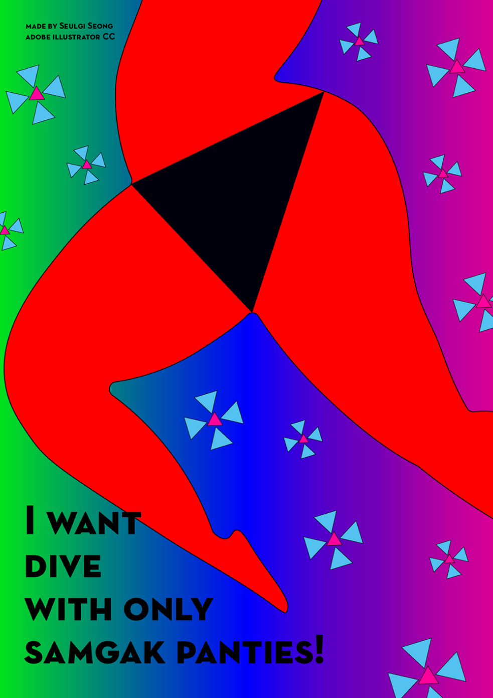
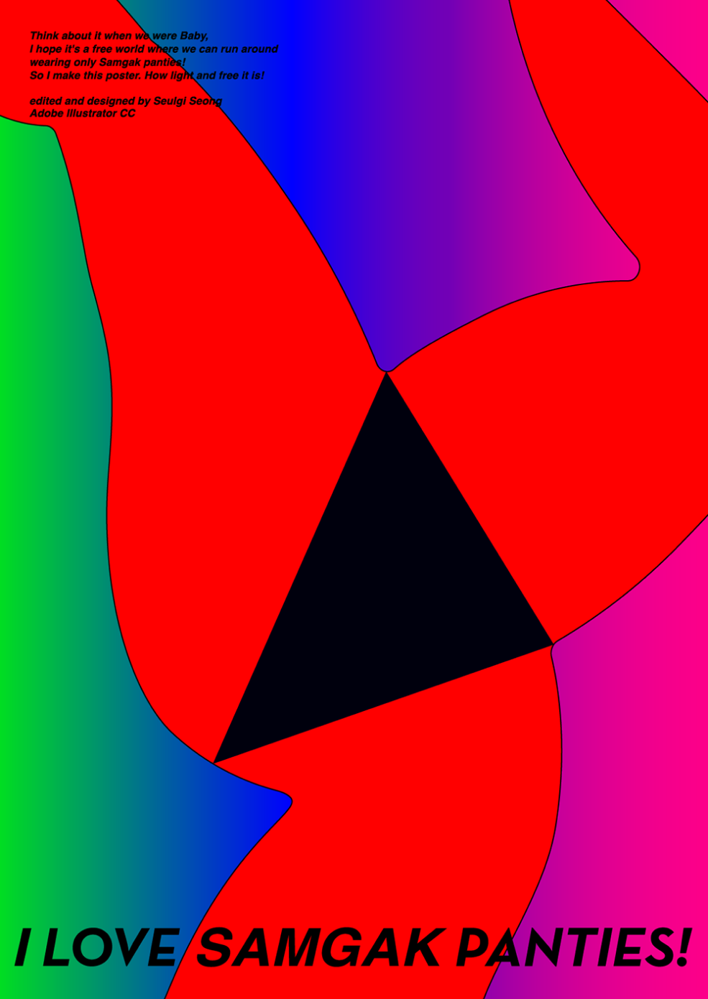
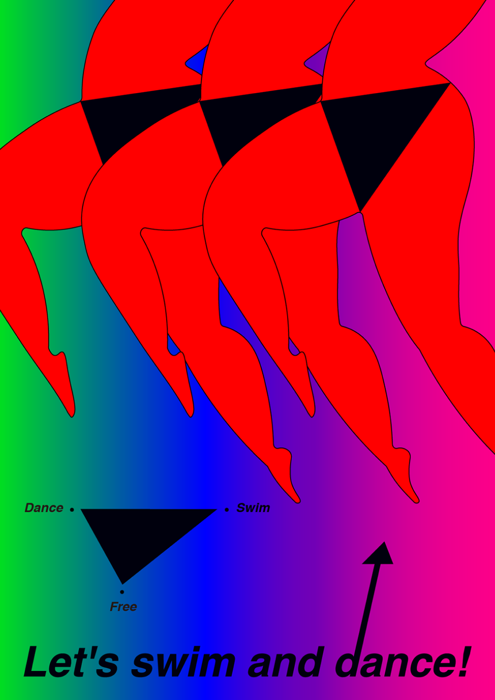
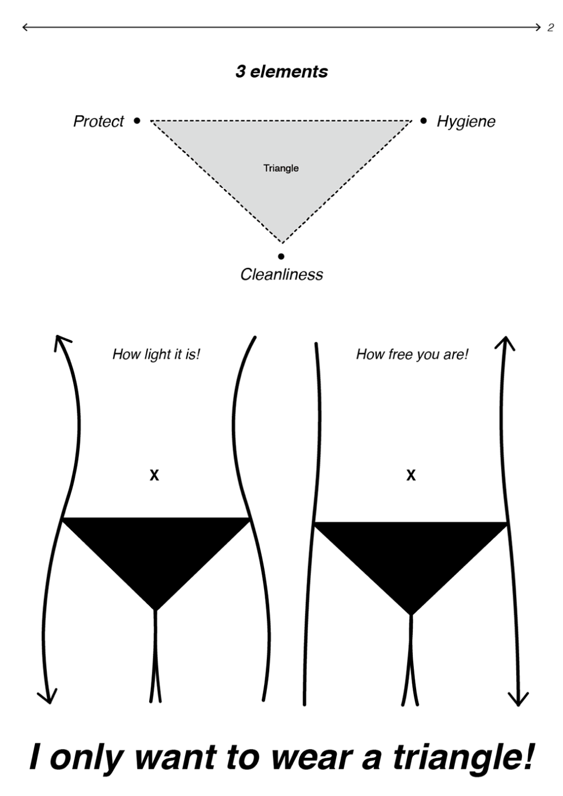
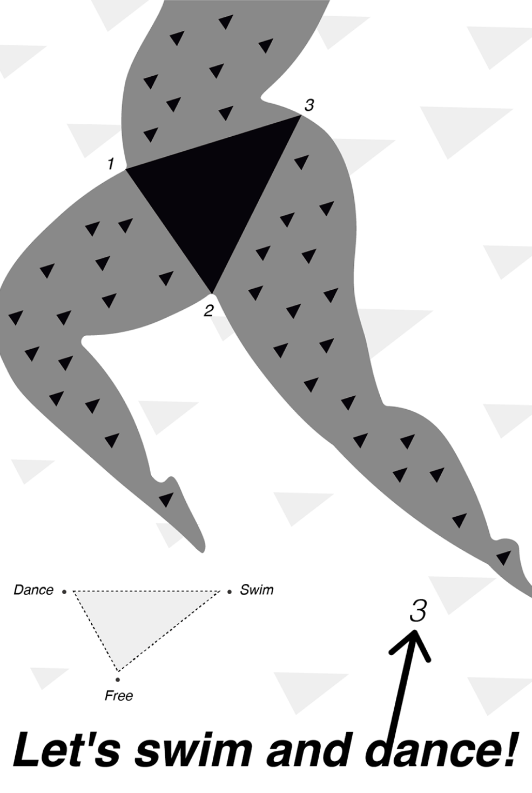

Project
Contact
seongseulgi21@gmail.com
Designer
Shape Research
성슬기
SHAPE RESEARCH
Category
Shape Poster1 / Shape Poster2 / Shape Poster3
삼각형을 활용하여 삼각팬티만 입은 자유로운 마음을 디자인 및 표현하였다.
SHAPE POSTER1
SHAPE POSTER2
SHAPE POSTER3
Poster
Poster
Poster
삼각형은 나에게 자유로운 마음을 의미한다. 내 피부는 좀 빨갛고,
또 뜨거운 채로 삼각형만 입고 공중에 떠다니고 싶은 마음을 포스터로 디자인하였다.
삼각팬티만 입고 하늘을 날아다니는 반짝이는 내 모습을 표현하였다.
가장 내 몸이 가볍고 마음이 자유로웠을 때는 삼각형 기저귀만 입고 온 방안을 기어 다녔을 때다.
어른이 된 나는 다시 삼각형을 통해서 그 의미를 되찾아보고자 한다.




